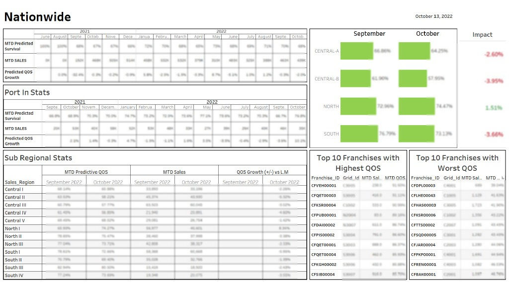

I had developed the overall business intelligence ecosystem for Huawei Equipment Delivery process.
This BI solution includes multiple Power BI dashboards that covers numerous domains of delivery operations.
All these dashboards were eventually linked with the centralized portal to make it easier for the end user
to access all dashboards on a single platform.
×
This dashboard was created to monitor the company's overall equipment delivery stats.
This includes multiple filters and attractive visuals to illustrate delivery KPIs.
Moreover, I have created many customizations on this dashboard according to customer demands and to make it more user-centered.
There is also a customized toggle button used in this dashboard to switch between two visuals.
×
This dashboard was created for the purpose of monitoring resource activity in fields.
An excel based BI dashboard that fetches its data from an excel sheet, which updates
periodically. There are many customizations on this dashboard like all the counts appearing
on this dashboard are clickable. We can click counts to filter data and export that filtered data from the export given below.

×
It's a Financial Penalty dashboard that I had created using gradient coloring. on customer demand, I have also added a scroller that is basically giving visibility for penalty criteria.

×
This Tableau dashboard was developd to monitor quality of sales for Zong mobile SIMS.
×
This dashboard is to monitor Zong overal 4G KPIs, like Active base, base movement KPIS, gross adds, reconnections, churns, etc.

×
It's a python based project that extracts data from the attachments of emails that we receive on daily bases.
After data extraction it gets saved in a local folder and then it is serves as a data source for other BI projects.
×
Python based project that sends automated emails. This project was developed to mitegate the hassle of sharing
daily kPI progress update with all stakeholders.
×
I have developed this excel project using excel VBA. There is one update button available in the first sheet of this excel file. When you click
this update button, first this excel file will gets refresh by updating all it's connection and data sources and then after updating, it will perform
all the operations that are required to update this file.